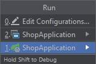

packageco.dongchen.shop.config;importcom.alibaba.druid.filter.Filter;importcom.alibaba.druid.filter.stat.StatFilter;importcom.alibaba.druid.pool.DruidDataSource;importcom.alibaba.druid.support.http.StatViewServlet;importcom.google.common.collect.Lists;importorg.springframework.boot.context.properties.ConfigurationProperties;importorg.springframework.boot.web.servlet.ServletRegistrationBean;importorg.springframework.context.annotation.Bean;importorg.springframework.context.annotation.Configuration;@ConfigurationpublicclassDruidConfig{// Read properties which start with a spring.druid prefix from the application.properties file
@ConfigurationProperties(prefix="spring.druid")// initMethod: initialize druid through its internal method called init
// destroyMethod: release druid connections through its internal method called close
@Bean(initMethod="init",destroyMethod="close")publicDruidDataSourcedataSource(){DruidDataSourcedataSource=newDruidDataSource();dataSource.setProxyFilters(Lists.newArrayList(statFilter()));returndataSource;}@BeanpublicFilterstatFilter(){StatFilterfilter=newStatFilter();filter.setSlowSqlMillis(1000);// Any SQL that exceeds 1 second is a slow SQL
filter.setLogSlowSql(true);// Logging slow SQL
filter.setMergeSql(true);// Merge logs
returnfilter;}@BeanpublicServletRegistrationBeanservletRegistrationBean(){returnnewServletRegistrationBean(newStatViewServlet(),"/druid/*");}}
Verify
Run the App
1
2
// Short Cut of "Run the Program"
Alt + Shift + F10

Choose the correspondent option and press enter.
View Druid Monitoring Dashboard in Browser
1
http://localhost:8080/druid/datasource.html
It might be a Chinese Simplified version, if so, please click the “English” linkage at the top right of the page:
If you think the content of this article has helped you, and if you would like some more high-quality materials in the near future, please give me some modest support.